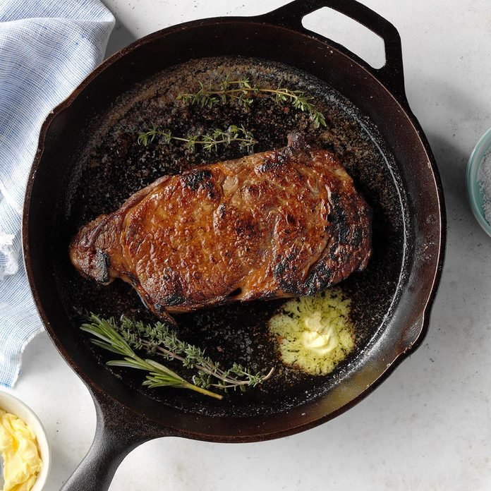

Cast-Iron Skillet Steak

Description
If you’ve never cooked steak at home before, it can be a little intimidating. That’s why I came up with this simple steak recipe that’s so easy, you could make it any day of the week.
Ingredients
- 3 teaspoons kosher salt, divided
- 1 beef New York strip or ribeye steak (1 pound), 1 inch thick
Steps
- Remove steak from refrigerator and sprinkle with 2 teaspoons salt; let stand 45-60 minutes.
- Preheat a cast-iron skillet over high heat until extremely hot, 4-5 minutes. Sprinkle remaining 1 teaspoon salt in bottom of skillet; pat beef dry with paper towels. Place steak in skillet and cook until easily moved, 1-2 minutes; flip, placing steak in a different section of the skillet. Cook 30 seconds and then begin moving steak, occasionally pressing slightly to ensure even contact with skillet.
- Continue turning and flipping until cooked to desired degree of doneness (for medium-rare, a thermometer should read 135°; medium, 140°; medium-well, 145°), 1-2 minutes.